01
Shape and line
Clarity, shapes and simplification, from observation to graphic form.
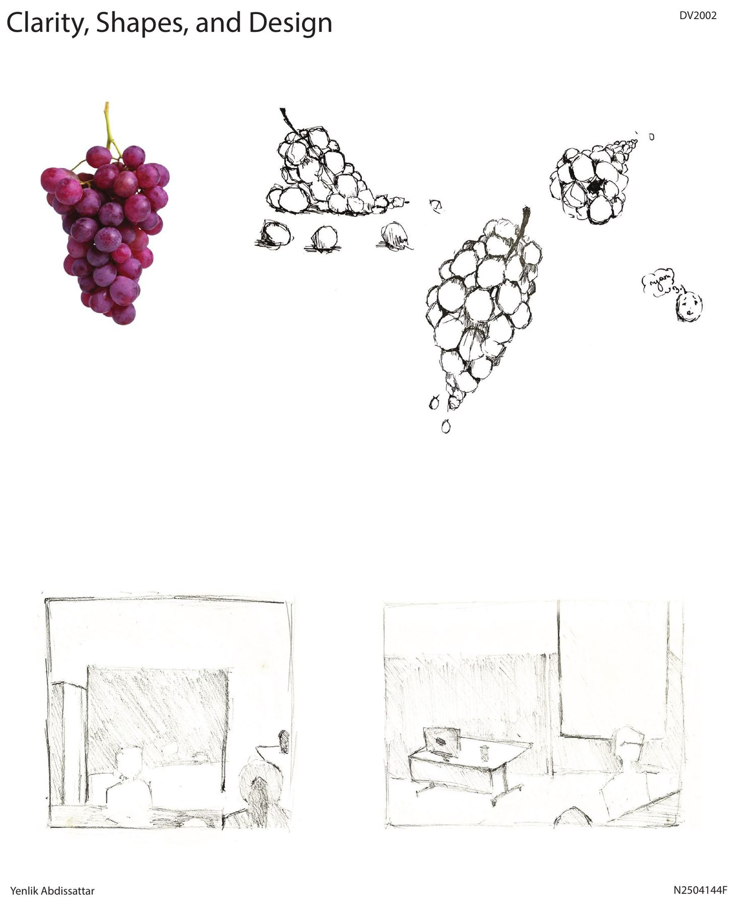
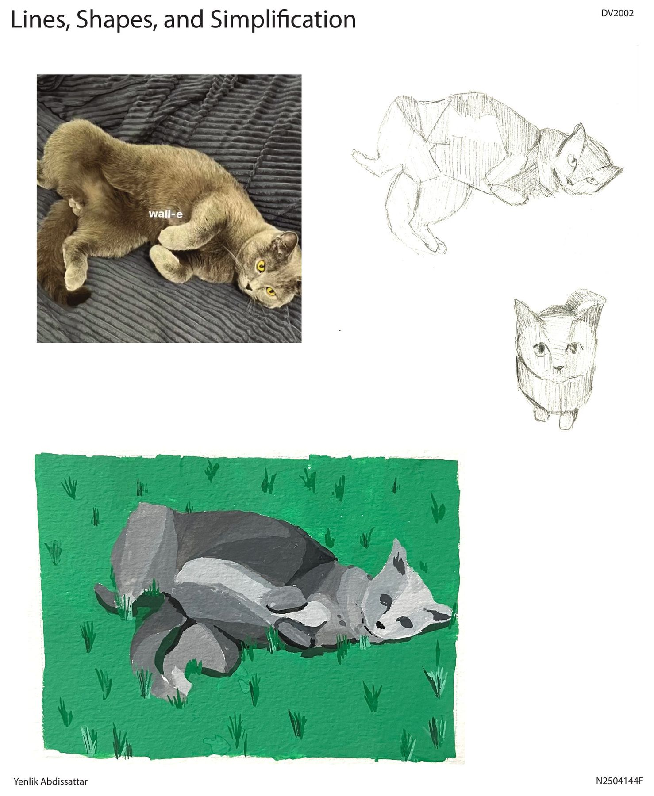
Digitalised sketchbook and postcards
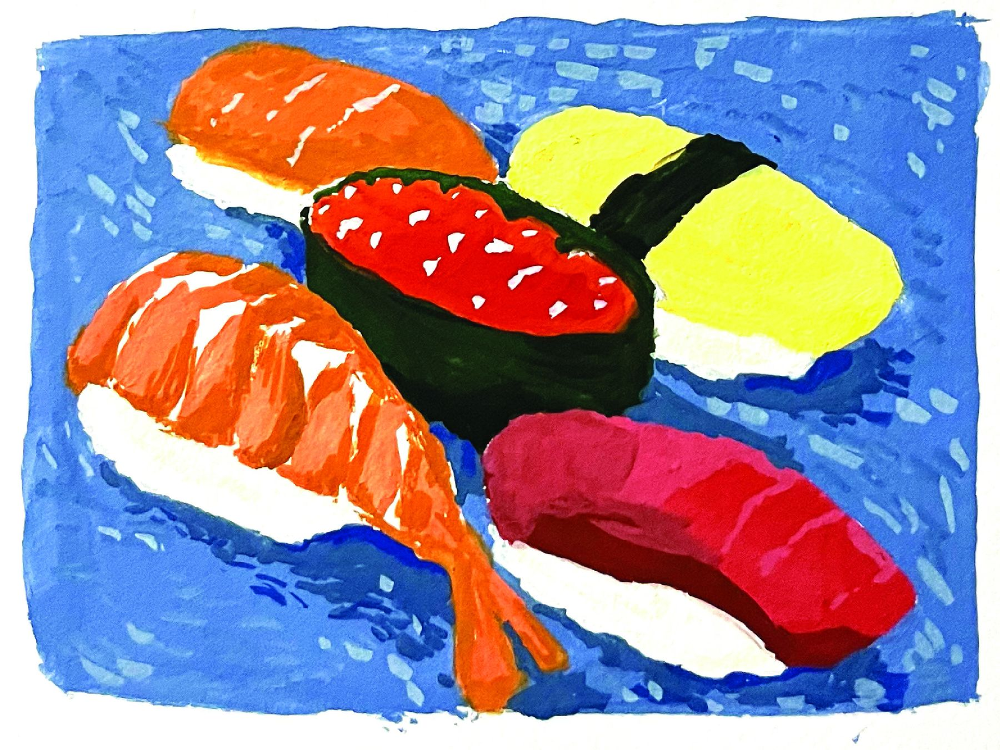
Overview
A digitalised sketchbook of shape, line and colour studies, ending in a set of flat colour-block postcards of everyday places.
Brief
Capture a personal slice of life rather than a generic tourist view, using only two or three colours per postcard.
Approach
Reference study of block colour and simplified silhouettes, quick pencil drafts to find the strongest shapes, then flat colour to test value contrast and figure–ground.
Clarity, shapes and simplification, from observation to graphic form.


Itten colour theory, tested in gouache landscapes.
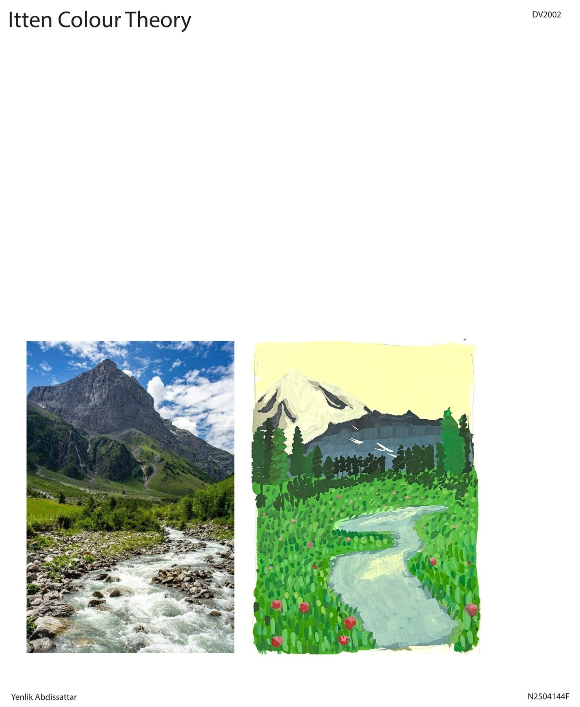
Block colour, simplified silhouettes and high-contrast light, studied in references.
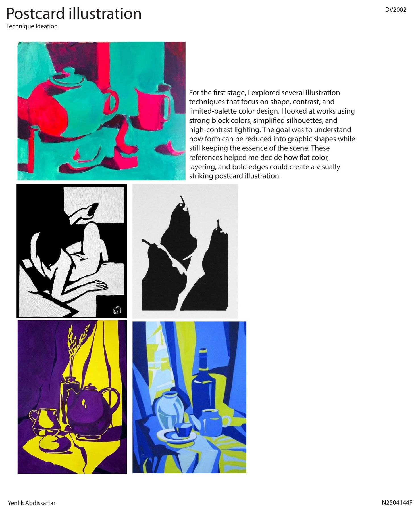
Familiar places: a bedroom, a breakfast table, campus architecture, a classroom.
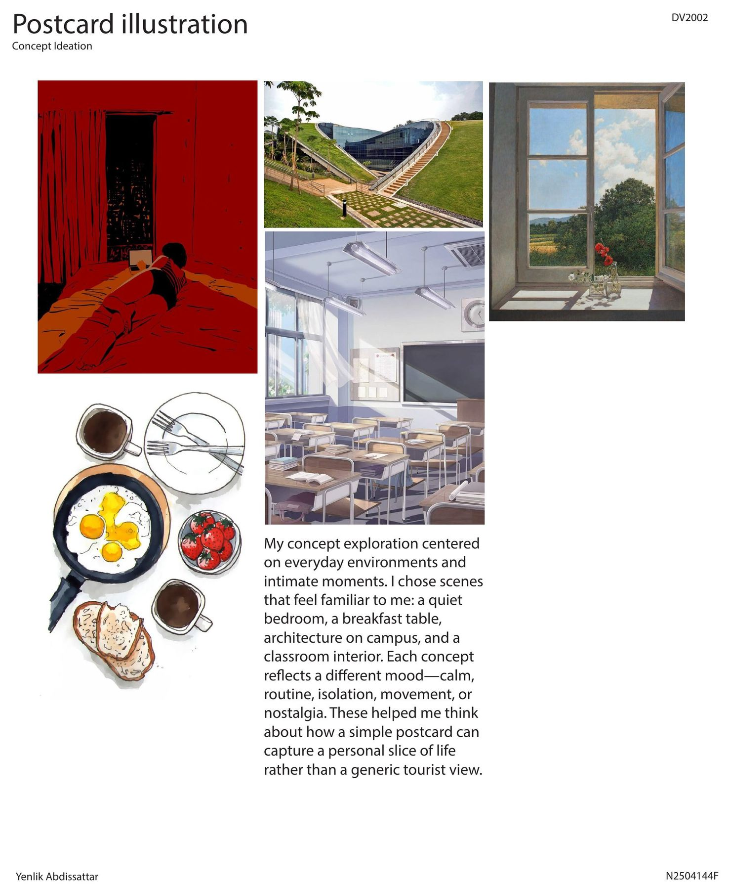
Pencil sketches for contour, light direction and space, to find the strongest silhouettes.
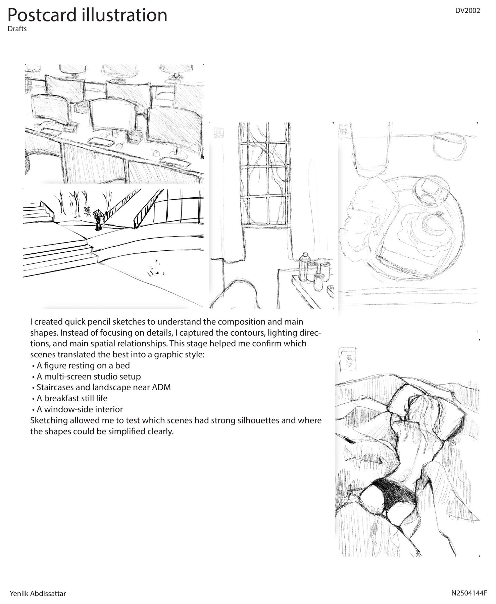
Two or three colours per piece; each palette shifts the mood.
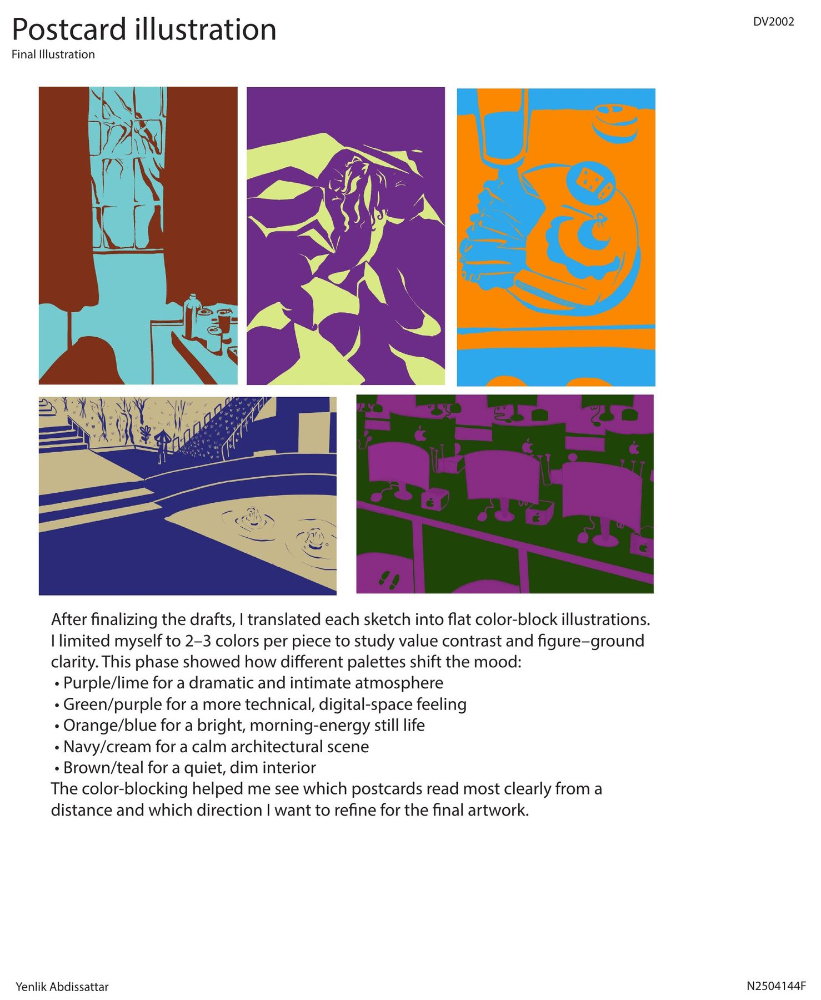
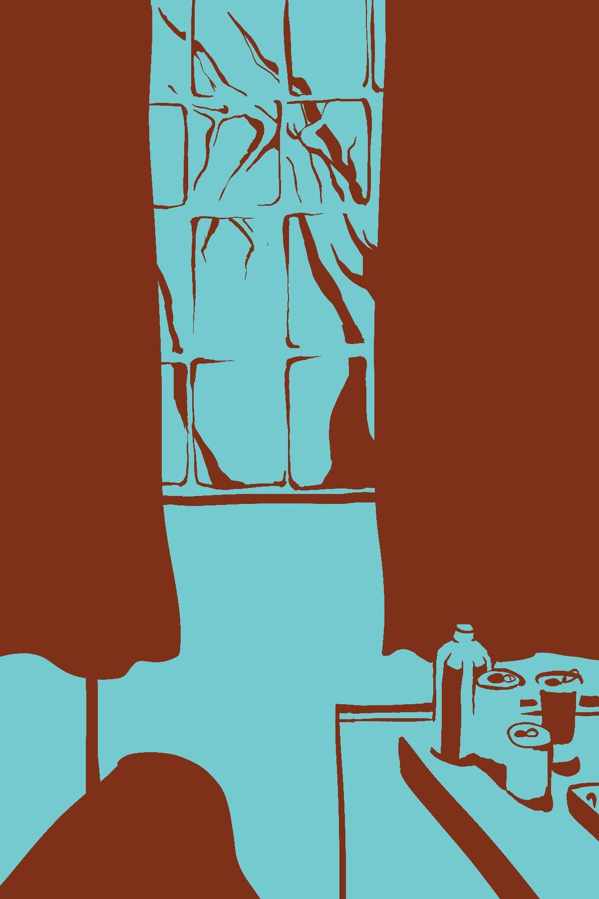
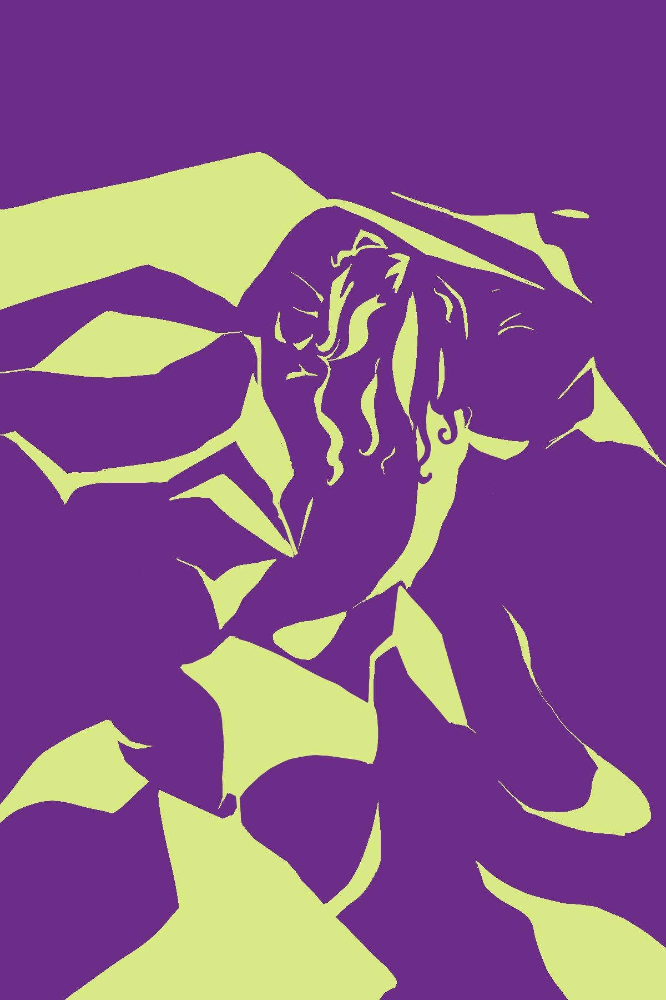
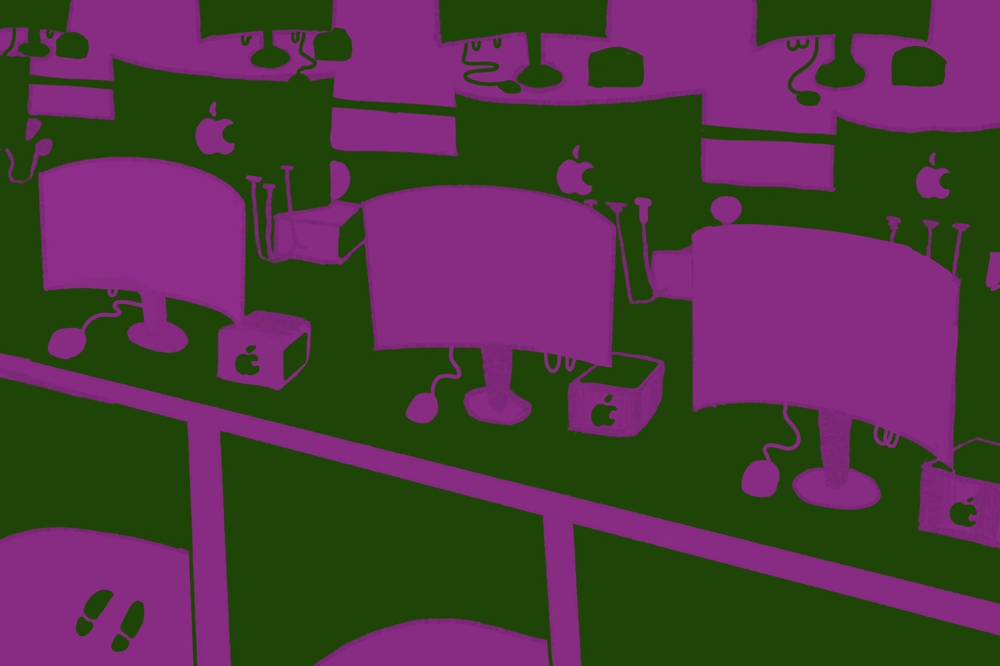
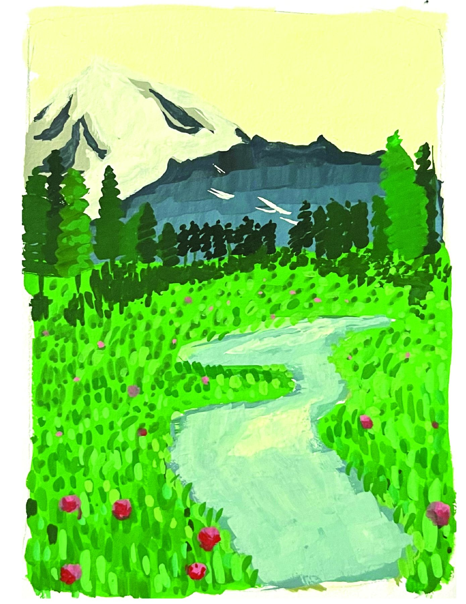

Next, 01
Wander